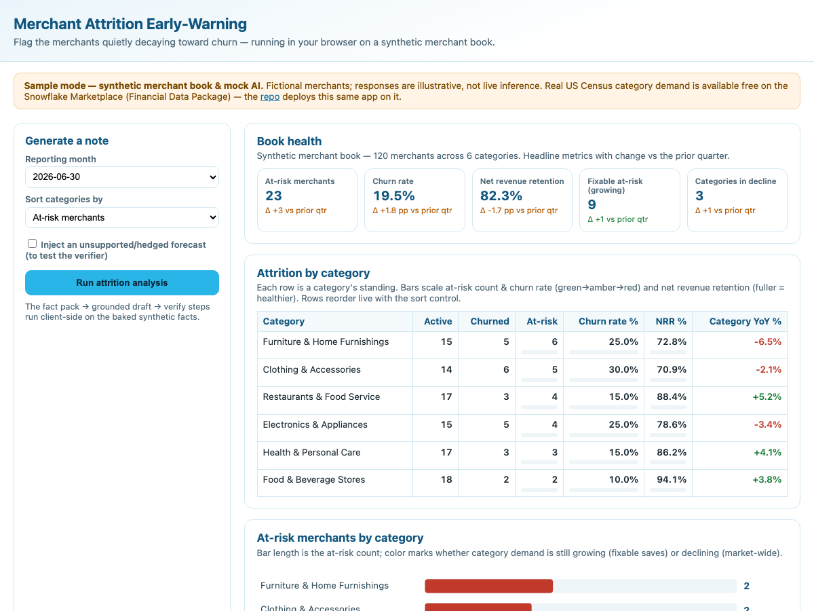
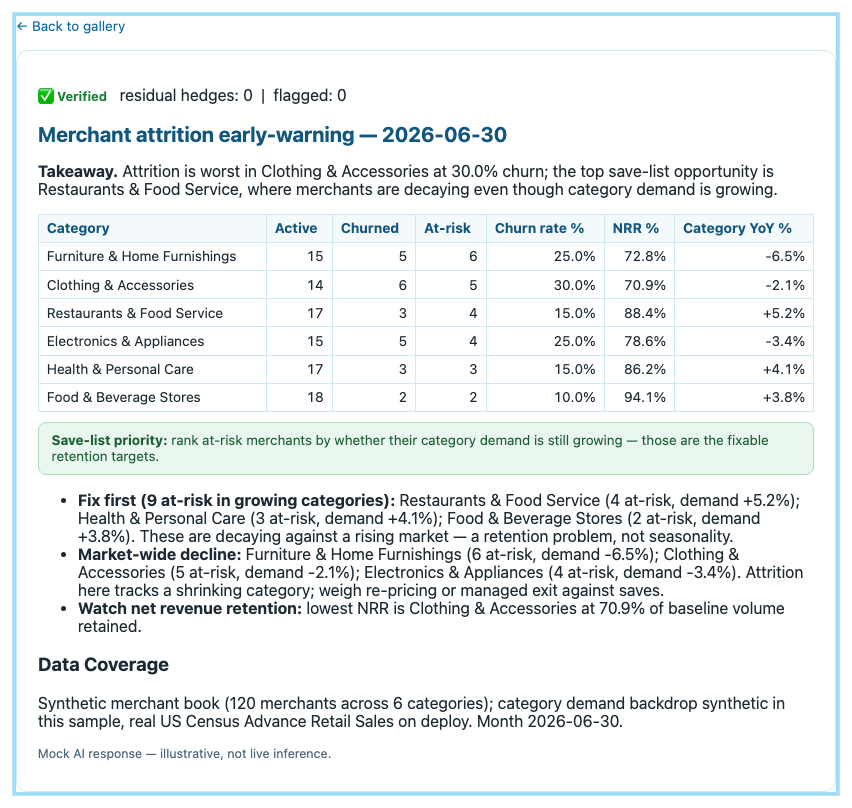

01 / See
A gallery of attrition notes, each badged Verified or Needs review. Each rolls up merchant health by category: active, churned, at-risk, churn rate, and net revenue retention next to category demand.
SNOW PACK · FINANCIAL SERVICES · PAYMENTS
An app for a payments processor’s merchant book — it flags the merchants whose volume is quietly decaying toward churn, tells you whether it’s the merchant or the whole category slowing, and a verifier refuses to ship an unsupported claim — with a Cortex Agent you can explore in Snowsight.
Synthetic merchant book in the Try page. Mock AI responses are illustrative, not live inference.
A merchant never sends a cancellation email — their processed volume just fades over a few months until they’re gone. By the time attrition shows up in the revenue report, the save window has closed. The hard part isn’t spotting a drop; it’s knowing whether this merchant is failing or its whole category is slowing — a retention problem you can fix versus a market trend you can’t.
A gallery of attrition notes, each badged Verified or Needs review. Each rolls up merchant health by category: active, churned, at-risk, churn rate, and net revenue retention next to category demand.
Explore in your browser on a synthetic merchant book — no account, no install. Or run one SQL script in your own account to try it on synthetic tables.
Mount the free Financial Data Package from the Marketplace, run setup.sql, and the same app runs with real US Census category demand. Point it at your settlements with Cortex Code.


A merchant book shrinking while its category is growing is a retention problem you can fix — not a market you should exit. This pack puts synthetic merchant volume decay next to real US Census Advance Retail Sales by category, so a merchant falling against a rising category stands out as a real save-list target instead of seasonality.